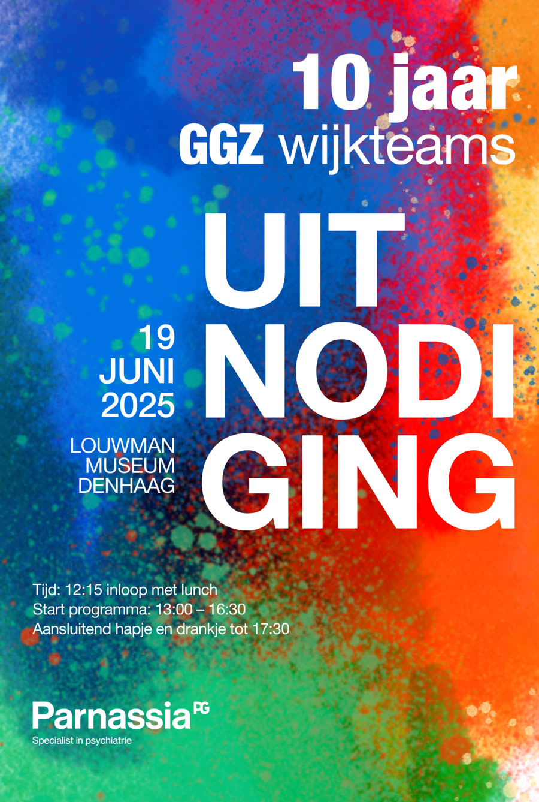

Parnassia · GGZ wijkteams / eventbeleving · 2025
Voor het jubileumevent “10 jaar GGZ wijkteams” van Parnassia verzorgden we de volledige creatieve uitstraling van het evenement in het Louwman Museum. Van documentairefilms en eventvisuals tot banners, uitnodigingen, schermcontent en regie: alles werd ontworpen om zichtbaar te maken wat wijkteams betekenen voor mensen achter de voordeur.
Parnassia organiseerde een jubileumevent rondom 10 jaar GGZ wijkteams. Het event moest terugblikken, inspireren, verbinden en zichtbaar maken welke maatschappelijke impact wijkteams dagelijks hebben.
Veel mensen kennen de organisatie, de systemen en de beleidskant. Maar niet de verhalen achter voordeuren, de complexiteit van situaties en de impact op levens van cliënten.
Daarom had dit event geen losse programmaonderdelen nodig, maar een ervaring die afstand doorbrak tussen beleid, praktijk, stakeholders en het echte werkveld.
Mensen onthouden geen programmaonderdelen. Ze onthouden momenten die iets met ze doen. Daarom moest alles binnen het event bijdragen aan sfeer, emotie, herkenning en betekenis.

Uitnodiging“Door de combinatie van documentairefilms en eventbeleving kwam het verhaal van wijkteams écht binnen.”
Communicatieadviseur — Parnassia Wijkteams
De productie maakte het werk van GGZ wijkteams zichtbaar, menselijk en professioneel. Niet als beleidsverhaal, maar als werkelijkheid.
Naast het evenement ontstond een complete contentbibliotheek voor interne communicatie, social media, toekomstige events, stakeholdergesprekken en de positionering van wijkteams binnen de GGZ.
Wij bouwen events die inhoud voelbaar maken, van documentaire tot complete eventervaring.
Plan een kennismaking!